Usuarios
En esta pestaña se mostraran todas los usuarios que existen actualmente
Insertar un Usuario
Para insertar un Usuario tendremos que rellenar todos los campos posibles en el formulario de la parte superior.
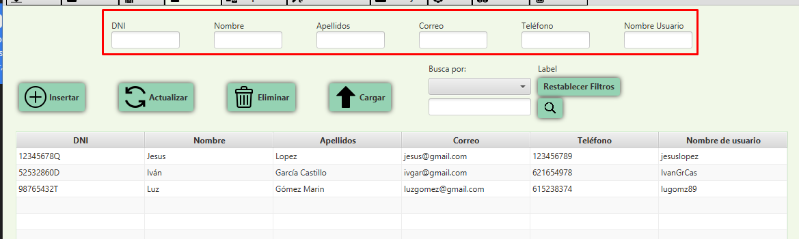Rellenamos los campos.
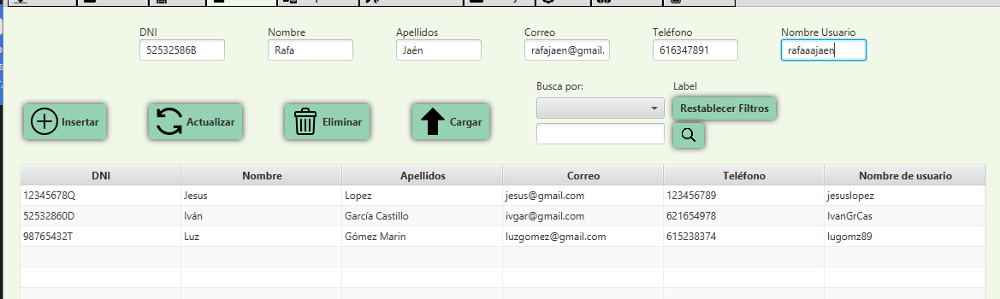Y si los campos estan bien escritos al darle al botón insertar se nos habrá insertado en la base de datos el nuevo Usuario.
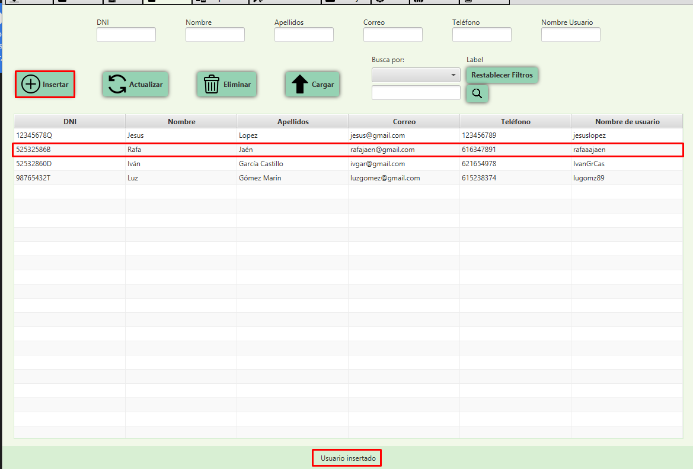Podemos ver de que nos sale un mensaje retroalimentario en la parte inferior de la ventana.
Actualizar Usuario
Para actualizar el Usuario tendremos que cargar el Usuario en el formulario de inserción.
Para ello se puede cargar de dos maneras:
Seleccionando una Usuario de la tabla y dandole al botón cargar.
O dandole doble click al elemento de la tabla.
Ahora solo tendremos que modificar los cambios que veamos convenientes y darle al boton actualizar.
Por ejemplo cambiaremos el nombre de Rafa a Luz y el usuario de rafaaajaen a luzajaen.
Al darle al botón de actualizar, tendremos que confirmar la acción.
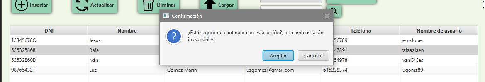Al confirmar se habrá actualizado
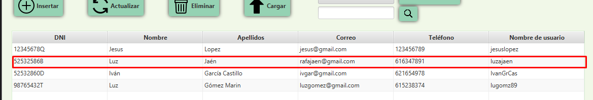Eliminar Usuario
Para eliminar un Usuario se hará de 2 formas:
Seleccionando al Usuario de la tabla y dandole al botón de eliminar.
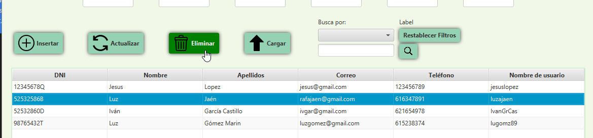Dándole click derecho a la Usuario que se quiera borrar
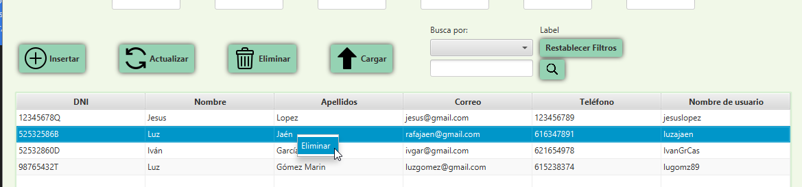
Al darle al darle a Eliminar, tendremos que confirmar la acción.
Al confirmar se habrá eliminado, lo sabremos por que se habrá quitado de la tabla y también aparecerá un mensaje abajo.
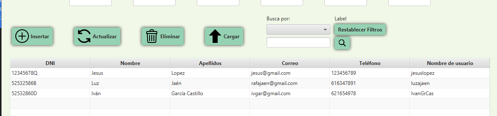Buscar un Usuario
Para buscar un Usuario tendremos que dirigirnos a la parte superior derecha de la tabla: 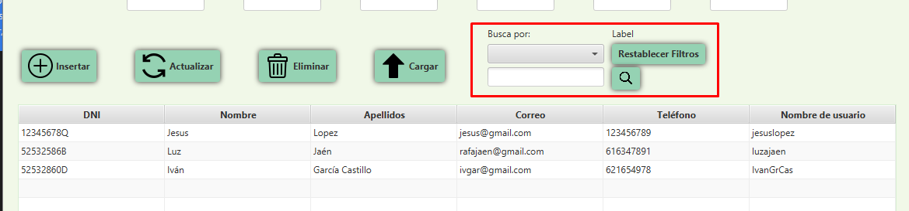
Para buscar por el valor que se quiera, se escoge un valor a buscar en el menu desplegable y se escribe lo que se uquiere buscar
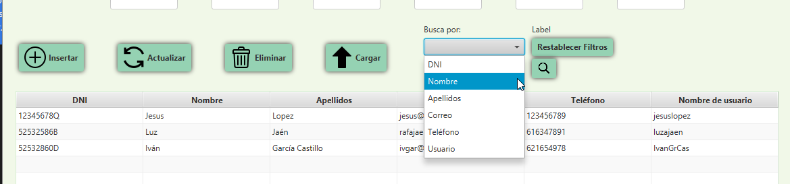 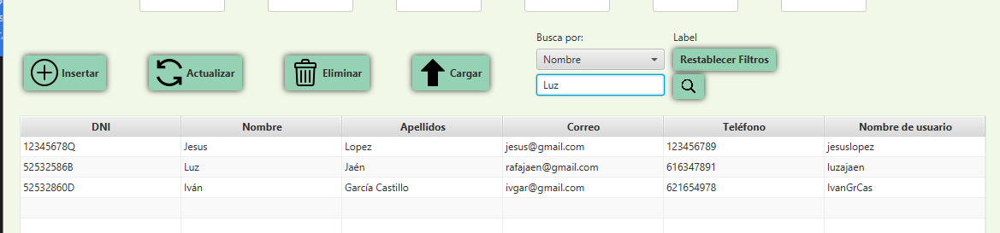Y al darle al botón de la lupa, si se ha encontrado algo se aplicara el filtro
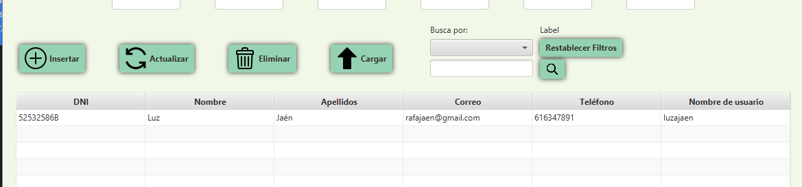Si intentamos buscar una cosa que no existe en la base de datos no saldrá el siguiente mensaje.
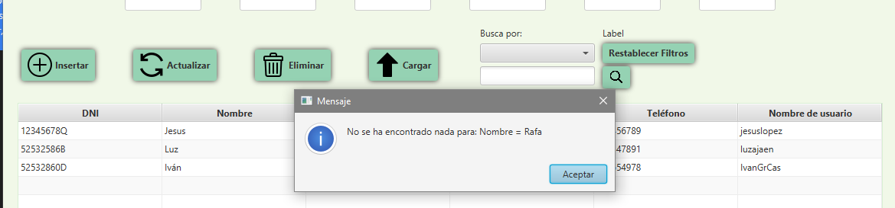